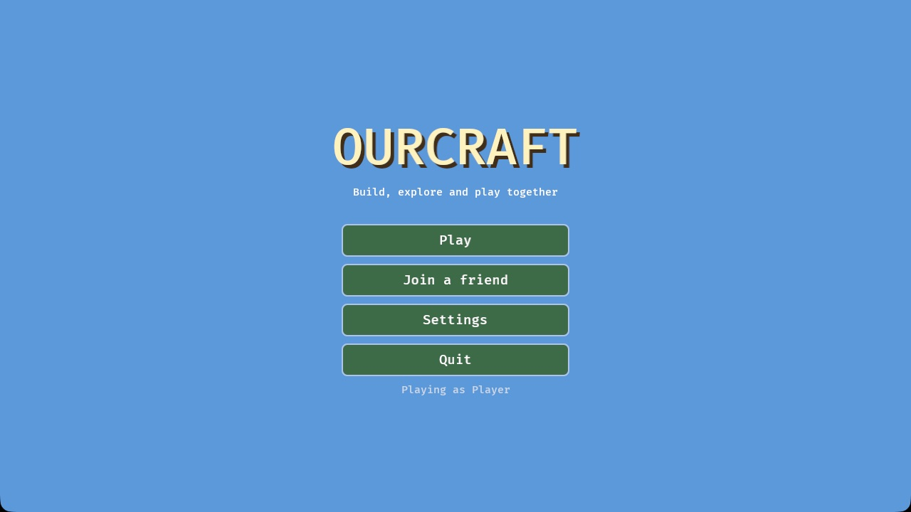
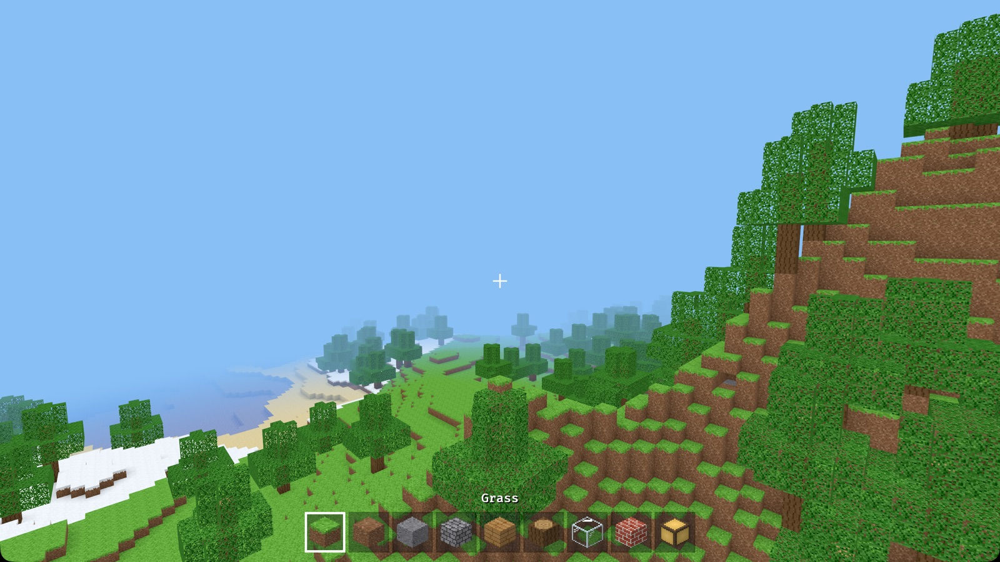
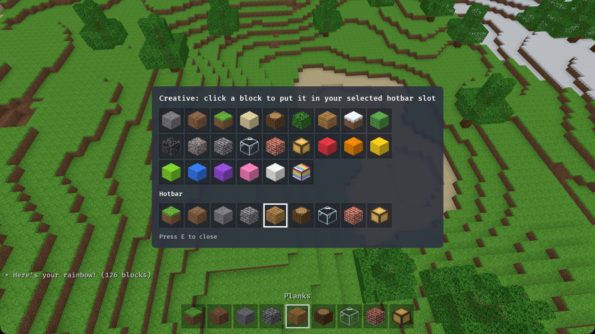
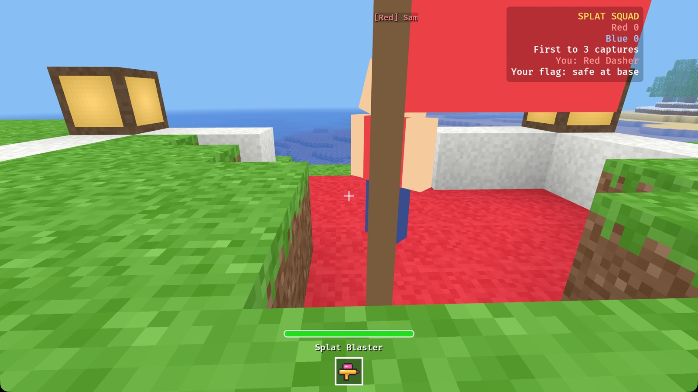
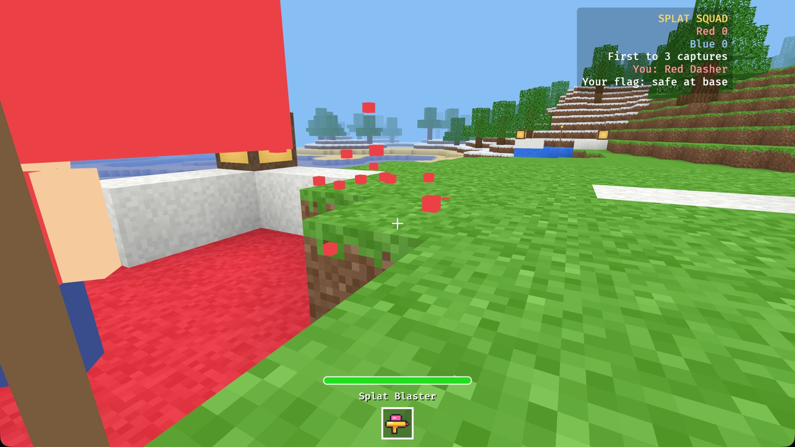
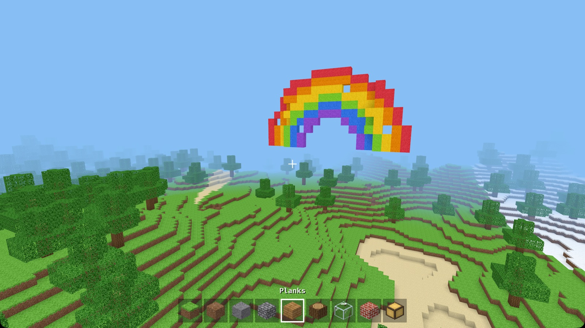
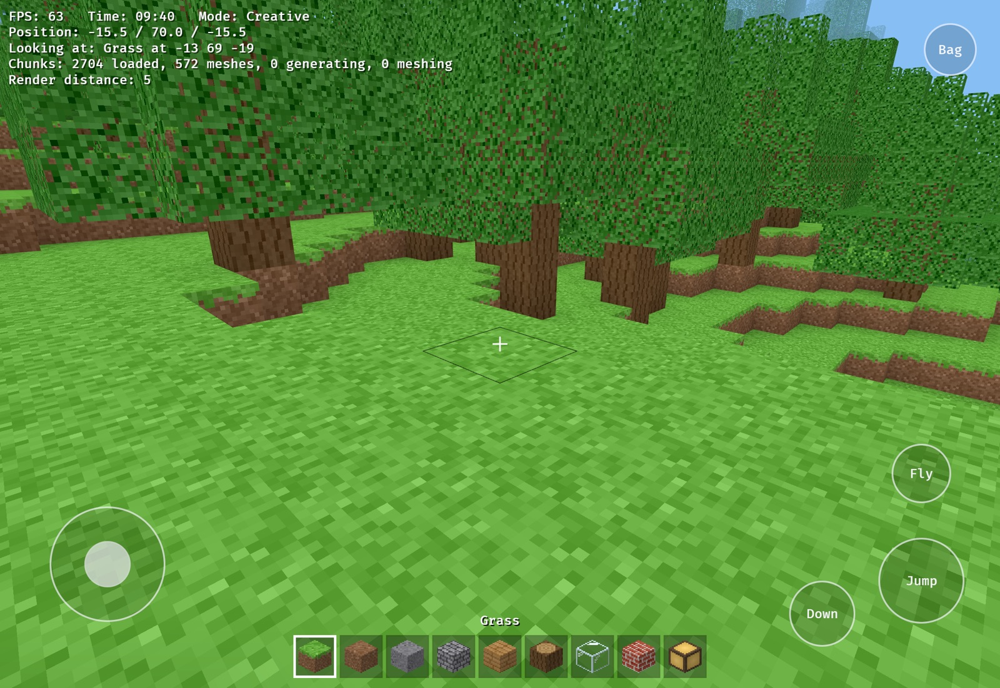

Ourcraft Manual
Everything you need to play Ourcraft and its team game, Splat Squad. New players can start with Getting started and Controls.
1. Getting started
Ourcraft is built from its source code with Rust. This takes a few minutes the first time; after that it starts in seconds.
- Install Rust from rustup.rs (one command; accept the defaults).
- Get the game:
git clone https://github.com/rsantacroce/ourcraft cd ourcraft - Start it:
You'll land on the main menu.cargo run --release
sudo apt install pkg-config libasound2-dev libudev-dev libwayland-dev libxkbcommon-devcargo run --release -- --world "My World" opens (or creates) a world, and
--connect 192.168.1.20 --name Sam joins a friend.2. The main menu

- Play lists your worlds. Click one to continue it, or + New world to make one.
- Join a friend shows games on your home network, or lets you type an address.
- Settings: your name, view distance, sound and more (see Settings).
- Quit closes the game. Your worlds are saved.
Making a new world
- Name: anything you like, or press Pick a random name.
- Seed (optional): a number that decides what the land looks like. The same seed always makes the same world, so you can share good ones with friends.
- Game: Build for free play, or Splat Squad for the team game.
- Creative / Survival (Build only): see Creative and survival.
- Friends on my network can join: switch on to let people on the same Wi-Fi join you.
In a world, press Esc (or the Menu button on touch screens) for the pause menu: Back to game, Settings, or Save and quit to title.
3. Controls
Click inside the game window to capture the mouse; press Esc to get it back.
| Action | Keyboard & mouse | Gamepad | Touch |
|---|---|---|---|
| Walk | W A S D | Left stick | Thumb on the left side, drag |
| Look around | Move the mouse | Right stick | Drag on the right side |
| Jump | Space | A | Jump button (steps are climbed automatically) |
| Run | Ctrl | Click the left stick | Push the joystick all the way |
| Fly on / off (creative) | Double-tap Space, or F | X | Fly button |
| Fly or swim up / down | Space / Shift | A / B | Jump / Down |
| Break a block / use a gadget | Left click (hold to repeat) | Right trigger | Press and hold |
| Place a block | Right click | Left trigger | Quick tap |
| Copy the block you're looking at (creative) | Middle click | D-pad up | |
| Choose a hotbar slot | 1–9 or mouse wheel | Bumpers | Tap the slot |
| Inventory | E | Y | Bag button |
| Chat / command | Enter / / | ||
| Pause menu | Esc | Menu button | |
| Show or hide info text | F3 | ||
| View distance | [ and ] | In Settings | |
| Skip ahead an hour | T | ||
| Creative ↔ survival | G |
4. Playing Ourcraft

Moving around
Walk with WASD and look with the mouse. You can jump up one block at a time. In water you float: hold Space to swim up. In creative mode, double-tap Space to fly, and land by flying down onto the ground.
Building and breaking
- The + in the middle of the screen is where you're aiming. The block you'd change gets a thin outline (you can reach about 6 blocks).
- Left click breaks the block. Hold the button to keep breaking.
- Right click places the block from your selected hotbar slot against the face you're pointing at. You can't place a block where you or another player is standing.
- Bedrock, the dark stone at the very bottom of the world, can't be broken.
Hotbar and inventory
The nine squares at the bottom are your hotbar. The selected one has a white border, and its name shows above it. Press E to open the inventory.

- Creative: every block is shown. Click one to put it in your selected hotbar slot.
- Survival: you see your 27 storage slots. Click one to swap it with your selected hotbar slot.
Creative and survival
| Creative | Survival | |
|---|---|---|
| Blocks | Endless supply of every block | Only what you collect; placing uses it up |
| Breaking | Blocks just disappear | The block goes into your inventory (stone gives cobblestone, grass gives dirt) |
| Flying | Yes | No |
Pick one when you make a world. You can switch any time with G.
The world
- Biomes: green plains, thick forests, sandy deserts with cacti, snowy lands, and tall rocky mountains with snow on top. Low land is filled with lakes and seas with sandy beaches.
- Caves wind underground. Some open up at the surface.
- Day and night: a full day lasts 20 minutes. Sunsets turn the sky orange; nights are dark blue. Lamps glow in the dark.
- It never ends: new land appears as you travel. Far-off land fades into the sky; raise the view distance to see further.
- Saving is automatic every 30 seconds, and again when you quit.
Blocks
| Block | Where to find it / notes |
|---|---|
| Grass, Dirt | Everywhere on the surface |
| Stone, Cobblestone | Under the dirt; breaking stone gives cobblestone |
| Sand | Deserts and beaches |
| Gravel | The bottom of lakes and seas |
| Log, Leaves, Planks | Trees; planks are for building |
| Snowy Grass | Snowy lands and mountain tops |
| Cactus | Deserts |
| Glass | See-through, great for windows |
| Bricks | For houses and walls |
| Lamp | Glows, even at night |
| Water | Lakes and seas; you can swim in it |
| Bedrock | The bottom of the world; can't be broken |
| Paint (8 colours), Rainbow Lamp | From the Paint Blocks mod |
5. Playing with friends
On the same Wi-Fi (easiest)
- The host makes or opens a world with Friends on my network can join switched on (on the Play or New world screen).
- Everyone else chooses Join a friend on the main menu. The host's game appears in the list after a second or two; click it.
By address
On the Join a friend screen, type the host's address (for example
192.168.1.20, or host:port) and press Join. The standard
port is 41700 (UDP). To play over the internet, the host needs to forward
that port on their router, or run a server somewhere reachable.
What you'll see
Other players appear as blocky characters with their name above their head. Every block anyone breaks or places shows up for everyone right away. Change your name in Settings before joining.
6. Playing Splat Squad

Splat Squad is a team game for two or more players. It's a mod that comes with Ourcraft. Two teams, Red and Blue, each have a base with a flag. Bring the other team's flag home to score; the first team to 3 wins the round.
Starting a match
- Main menu → Play → + New world.
- Click Game until it says Splat Squad.
- Switch on Friends on my network can join, and press Create and play.
- Friends choose Join a friend and pick your game.
Two bases appear, about 44 blocks apart: a red one and a blue one, each with a coloured
platform, low walls, lamps, and a flag on a pole. Players are put on the smaller team
automatically. Splat Squad worlds can also be run on a server with
--mode team_shooter.
The classes
When you join, your hotbar shows four class badges. Select one (keys 1–4,
or tap it) and click to become that class. Your hotbar then holds your gadget. You can
change class any time with /class name.
| Class | Paint | Speed | Gadget | What it does |
|---|---|---|---|---|
| Dasher | 80 | Fast | Splat Blaster | Rapid little paint pellets (16 each, about 6 shots a second). Fast and straight. |
| Bulwark | 170 | Slow | Bubble Cannon | Big, slow bubbles (42 each, about one a second). Hard to stop. |
| Lobber | 110 | Normal | Paint Lobber | Bombs that fly in an arc (30 on a direct hit) and splash everyone within 3 blocks (up to 40). |
| Patcher | 100 | Quick | Mend Beam | A short beam (14 blocks): refills a teammate's paint, or gives an opponent a little splash. |
How to play
- Pick a class from the badges.
- Head for the other team's base. The scoreboard in the top right shows the score and whether your own flag is safe.
- Touch their flag to grab it. It floats above your head, and everyone is told.
- Run home and touch your own flag to score. This only works while your own flag is safe at your base.
- Defend. If someone takes your flag, splat them to make them drop it, then touch it to send it home.

Rules
- Paint meter: the bar above your hotbar. Getting hit by the other team drains it. You can't hurt your own team.
- Splatted: when the meter is empty you pop in a puff of confetti, drop any flag you carry, and wait at your base for 5 seconds. Then you're back with a full meter.
- Dropped flags stay where they fall. The flag's own team returns it by touching it; otherwise it goes home on its own after 20 seconds. The other team can pick it up again.
- Winning: the first team to 3 captures wins the round. After a short celebration, everyone respawns and a new round begins.
- No building, breaking or flying during Splat Squad, so the arena stays fair.
Tips
- Dasher: you're the best flag runner. Don't stop to fight; dodge and run.
- Bulwark: stand near your flag and block the way in. Lead your shots: bubbles are slow.
- Lobber: aim high to throw over walls, and into groups for big splashes.
- Patcher: follow your flag runner and keep their meter full.
- Teams work best with a mix: someone guarding, someone running, someone helping.
Splat Squad commands
/class dasher(orbulwark,lobber,patcher): change class./team: switch to the other team./score: show the score.
7. The Paint Blocks mod

Also included with the game. It adds eight bright paint blocks (red, orange, yellow, lime, blue, purple, pink, white) and a glowing Rainbow Lamp. You'll find them in the inventory (E) in creative mode.
Type /rainbow in chat and a rainbow appears in front of you. It only fills empty
air, so it never covers anyone's buildings.
8. Chat and commands
Press Enter, type, and press Enter again to send (Esc
cancels). Messages fade after a few seconds. Lines starting with / are
commands:
/help: list commands./time dayand/time night: change the time for everyone./rainbow: Paint Blocks mod./class,/team,/score: Splat Squad.
9. Settings
| Setting | What it does |
|---|---|
| Your name | What other players see above your head |
| View distance | How far you can see (in chunks of 16 blocks). Lower it if the game feels slow |
| Look sensitivity | How fast the view turns with the mouse |
| Sound volume | All game sounds |
| Touch controls | Automatic (shown on touch screens), on, or off |
| Hide rude words in chat | On by default |
| Show info text | The FPS, position and help text in the corner (also F3) |
Settings are saved in settings.txt next to your worlds folder:
- macOS:
~/Library/Application Support/Ourcraft/ - Windows:
%APPDATA%\Ourcraft\ - Linux:
~/.local/share/ourcraft/
10. Running a server
A dedicated server keeps a world running for everyone, with no window and very little memory.
cargo run --release -p ourcraft_server --bin ourcraft-server -- --world world| Option | Meaning |
|---|---|
--world NAME | World folder under ./worlds/ (created if new) |
--port 41700 | UDP port to listen on |
--mode team_shooter | Make a new world a Splat Squad world |
--survival | Make a new world survival instead of creative |
--seed N | Seed for a new world |
--name "…", --motd "…" | Server name and welcome message |
--view-distance 10 | Most chunks sent to each player |
--max-players 16 | Player limit |
--mods FOLDER | Extra mods to load (default ./mods) |
Press Ctrl+C to save and stop. Servers on your network show up on the Join a friend screen automatically.
11. Mods
Mods are small programs (WebAssembly files ending in .wasm) that add blocks,
gadgets and game modes. Ourcraft comes with three: Paint Blocks,
Splat Squad, and Snow Fun (type /snowman or
/snowballs in a building world).
- Adding a mod: put its
.wasmfile in themodsfolder next to your worlds folder (or next to a dedicated server), and restart. - Safety: mods can't read your files or use the internet. They can only use the game's mod API. Each one has limits on time and memory, and a mod that misbehaves is switched off.
- Making mods: mods are written in Rust. The
Modding Guide walks you through making one step by step
(snow bricks, a
/snowmancommand and a snowball thrower), with recipes and the full API reference.
12. iPad and Android

- Moving: put your thumb anywhere on the left side and drag. Push all the way to run. You hop up steps automatically.
- Looking: drag anywhere on the right side.
- Building: a quick tap places a block; press and hold to break.
- Buttons: Jump, Down, Fly (creative), Bag (inventory, top right) and Menu (top left). Tap a hotbar slot to select it.
- Splat Squad: tap or hold to use your gadget.
Installing: iPad/iPhone builds come from the Xcode project in
mobile/ios; Android builds from mobile/android/build.sh. See the
project's README for details.
13. For parents
- No accounts, no ads, no purchases. Nothing to sign up for.
- Private by default. Single-player worlds are on your device only. Others can join only if you switch on Friends on my network can join (same network) or you run a server.
- Gentle combat. Splat Squad uses paint and confetti: no blood, no weapons that look real.
- Chat filter for rude words, on by default (Settings).
- Open source: you can read every line of the game on GitHub.
14. Problems and questions
The game feels slow
Lower the view distance in Settings (or press [). Make sure you started it with
--release; without it the game runs much slower.
My friend's game doesn't appear in "Join a friend"
Check that the host switched on Friends on my network can join, that you're on the same Wi-Fi, and that a firewall isn't blocking UDP ports 41700 and 41701. You can always type the host's address instead. On iPhone and iPad the list may stay empty; typing the address works.
"Your game version doesn't match the server"
Everyone needs the same version of Ourcraft. Update with git pull and start the
game again.
The mouse won't move the view
Click inside the game window to capture the mouse. Esc releases it.
Where are my worlds?
In the worlds folder next to settings.txt (see
Settings). Each world is one folder; copy it to back it up.
Something else?
Open an issue on GitHub.